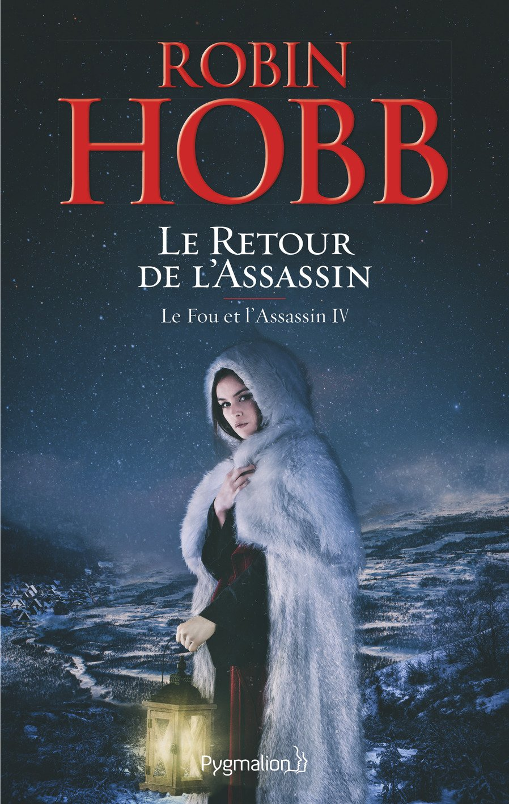

Auteur de l'oeuvre : Robin Hobb
Résumé: Affaibli par le poids des années, FitzChevalerie cherche un moyen de secourir la dernière personne qui semble avoir encore besoin de lui en ce monde. Malgré l'envie du Fou d'aider son vieil ami à poursuivre les ravisseurs d'Abeille, son état de santé lui interdit tout nouveau danger. Et aujourd'hui connu de tous à la cour, le noble lignage de Fitz ne lui permet plus la liberté dont il jouissait autrefois. En dépit de ces difficultés, il lui faudra se conformer aux ordres du roi ou subir les conséquences de ses actes pour mener à bien sa mission, qui sera peut-être la dernière... Partagé entre tristesse, haine et faiblesse, Fitz doit à nouveau emprunter les piliers d'Art et rattraper coûte que coûte Dwalia et ses sbires. Aura-t-il la force de recouvrer ses anciens talents d'assassin, d'accomplir sa quête, pour son vieil ami et sa fille ?
Note: Pas de notation pour le moment
Edition: Pygmalion
Date de parution: 28/09/2016
Disponibilité: Disponible
Du même auteur :
Pas d'oeuvre pour le moment
Nos lecteurs ont aussi aimé :

Notes et commentaires
Avis d'Antoine
Avec L’Assassin royal, Robin Hobb nous a conquis. Voilà qu’avec Le Fou et l’assassin, il fait encore plus fort. Plus fort parce que Fitz, plus âgé, usé par les combats mais plus malin, use davantage de psychologie pour se sortir des guêpiers que lui tendent ses ennemis. Et forcément, on porte une tendresse particulière à ce héro qui a tout vu et tout vécu. Dans ce tome 4, on rentre dans le vif du sujet dès les premières pages. On suit Fitz dans une course contre la montre effrénée qui nous tient en haleine jusqu’à la dernière ligne.
Les notes de nos lecteurs
★★★★☆
Les avis de nos lecteurs
Partagé entre tristesse, haine et faiblesse, Fitz doit à nouveau emprunter les piliers d'Art et rattraper coûte que coûte Dwalia et ses sbires. Aura-t-il la force de recouvrer ses anciens talents d'assassin, d'accomplir sa quête, pour son vieil ami et sa fille ?